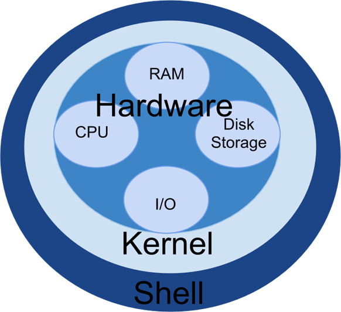
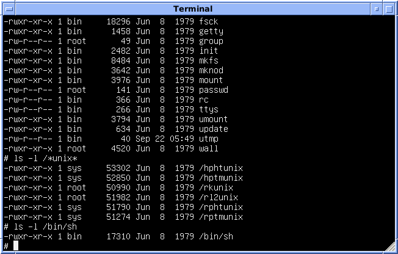
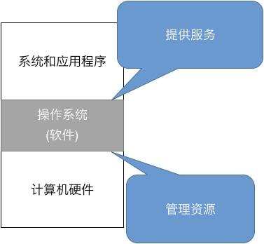
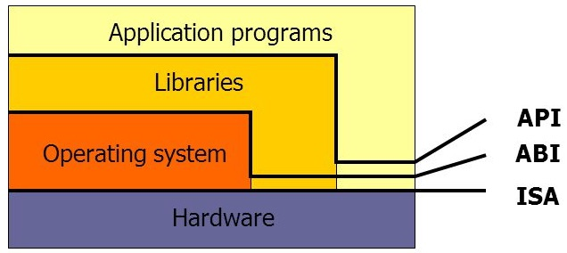
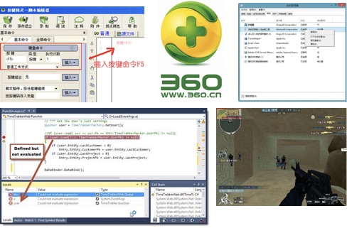

public: True class: center, middle # [C] 应用眼中的操作系统 蒋炎岩 <jyy@nju.edu.cn> 南京大学计算机软件研究所 --- # 本讲概述 > 引子：我们已经知道操作系统是“管理资源、服务应用”的程序，但.red[到底什么是操作系统]？ ---- * Top-Down：操作系统 = 游戏规则 * Bottom-Up：操作系统 = C程序 --- class: center, middle # Top-Down # 认识UNIX Shell 当我们说“操作系统是API规约”的时候，这太抽象了； 让我们从应用程序看起。 --- # Shell (壳) 操作系统 = 游戏规则 操作系统内核(Kernel) = 游戏规则的实现 操作系统外壳(Shell) = .red[使用游戏规则]管理程序的应用 .center[] --- # The UNIX Shell UNIX Shell：一个.red[命令解释器] (an overly simplified version: [echo](/static/wiki/os/2019/demos/sh.c)) * stdin/stdout/stderr连接到.red[终端] —— 交互 * 用于管理操作系统中的程序：运行、终止、查看…… .center[] --- # The UNIX Shell (cont'd) Shell的作用：把用户的.red[命令]翻译成相应的系统调用 ------ 大家熟知的日常例子： * `gcc a.c && ./a.out > a.txt` * `find . -name "*.c" | xargs cat | wc -l` * `diff <(seq 1 100) <(seq 1 110) | less` (想想这个可以做什么？？) 翻译成操作系统API的调用序列 * 进程创建 fork(2), execve(2) * 管道创建 pipe(2) * 输入/输出流重定向 dup2(2), close(2) --- # 一些有趣的事实 Unix *is* user friendly. It's just selective about who its friends are. * 编程不完全符合人类的天生直觉 * 非常符合程序员(geek)的编程直觉：不能.red[自动化]说个jb？ * 例子：Makefile; submit.sh; ... .center[<img src="/static/wiki/os/2019/img/geek.png" width=400px/>] --- # The UNIX Philosophy 我们无时不刻都在编程：把很多小工具组合起来完成复杂的任务 * 很多很多很多小而精的工具 (刚才看到的那些) * 多到什么程度呢：Why programmers like UNIX: unzip, strip, touch, finger, grep, mount, fsck, more, yes, fsck, fsck, fsck, umount, sleep… * 有时候真的有奇效——例如在vi中编辑二进制文件 ------ * Write programs that *do one thing and do it well*. * Write programs to *work together*. * Write programs to *handle text streams*, because that is a universal interface. --- # 一个有趣的UNIX设计 文件 = 数据(和数据上的操作) * 文件操作：读(read)、写(write)、定位(lseek) * 这套API可以访问任何类型的数据 计算机系统里的一切 = 数据 (ICS课已经学过) * .red[推论：计算机系统里的一切 = 文件] ---- 数据 = 对象：系统的状态、进程间通信的连接、进程的内存、I/O设备…… * 我们处理.red[文件]的工具就能自动能处理设备、网络、内存 --- # 设备即文件; devfs 例子： * `/dev/random` - 虚拟设备 * `lsblk` - 查看系统中的块设备 * `cat /dev/sdb | head -c 512 | ndisasm -b 16 -o 0x7c00 -` - 反汇编主引导扇区 * `cat ubuntu-18.04-livecd.iso > /dev/sdb && sync` - 制作usb启动盘 * 还记得`<(pstree)`吗？它是怎么实现的？ --- # 进程即文件; procfs(5) 例子： * `cat /proc/cpuinfo` - 查看系统中的CPU * `cat /proc/kallsyms` - 查看内核符号 * `echo "Hello" > /proc/$$/fd/1` - 向某个进程的标准输出写入数据 * `pstree`的实现就很容易了 (对比Windows提供`GetProcessSnapshot`类似的API) * ……游戏修改器 --- # 系统配置即文件; sysfs(5) Kernel 2.6引入，基于kobject，能够完整控制Linux内核的状态 例子： * `tree /sys/bus/pci` - 列出系统中的PCI设备 * `ls /sys/module` - 列出内核中的模块 --- # Everything is a File 好处：非常灵活，一个shell脚本就能搞定几乎任何事 坏处：容易砸到自己的脚 * 做人的根本原则：.red[不要在文件名中使用空格] ---- > UNIX was not designed to stop you from doing stupid things, because that would also stop you from doing clever things. > > *— Doug Gwyn* ---- > yzh顾问的Makefile：`rm -rf $(OBJ_DIR)/*` > > 因为不知的原因，`$(OBJ_DIR)=""` --- class: center, middle # Top-Down # 操作系统 = 游戏规则 --- # UNIX世界的游戏规则 .float-right[] 操作系统：.red[管理资源]、.red[服务应用] 应用程序是操作系统的实际使用者；使用操作系统 = 系统编程 * bash * cat, ls, vi * pstree * gdb, 游戏外挂 * …… --- # 游戏规则0：程序 操作系统上运行.red[编译后的C程序]，从`main`开始执行 * 操作系统规定：`main`函数将会获得三个参数 * 操作系统规定：`main`的返回值是程序的exit code (0–255) ```c int main(int argc, // argument count char *argv[], // argument vector char *envp[] // environment variables ) { ... return 0; // exit code } ``` 例子：[arguments.c](/static/wiki/os/2019/demos/arguments.c) * 环境变量就是我们使用export导出的变量(`AM_HOME`) * 这样程序就知道它运行的.red[环境]了(so easy!) --- # 游戏规则0：程序 游戏规则 = .red[约定/规约] (specification) > A *specification* often refers to a set of documented [requirements](https://en.wikipedia.org/wiki/Requirements) to be satisfied by a material, design, product, or service. A specification is often a type of [technical standard](https://en.wikipedia.org/wiki/Technical_standard). ---- 操作系统对程序的约定： * 执行时会获得命令行参数(argv)和环境变量(envp) * `argv[0]`是程序运行的命令行参数 * `envp`又有它的specification * 格式：`KEY=VALUE` * 一些约定的变量：`PATH`, `HOME`, … --- # 游戏规则1：程序的执行 C程序经过编译和链接，得到.red[二进制文件] (文件是操作系统中的一个对象，稍后讨论) * 《计算机系统基础》已经学过 * [链接的例子](AM_Intro) * 除了main以外，还链接了ld-linux-x86-64.so、crt*.o、libc ---- C程序可以做什么？ * .red[在内存中进行纯粹的计算] (ANSI C，除去库的部分) * .red[调用库函数] → 库函数是什么？ --- # 游戏规则2：库函数 库函数也是C语言写成的，例如`memcpy`： ```c void memcpy(void *dest, const void *src, size_t iterations) { char *d = dest; const char *s = src; while (iterations > 0){ *d++ = *s++; --iterations; } } ``` 但总有一些函数，你不知道如何实现： * 同一份程序，`printf("Hello World")`能够打印到屏幕(显示控制器)、文件(磁盘)、网络……这是怎么办到的？ --- # 游戏规则3：操作系统API 回到操作系统——管理.red[资源] (bottom)、服务.red[应用] (top) * 资源很自然地抽象为操作系统中的.red[对象] * 多个处理器、内存、进程、文件、I/O设备、网络连接 * 操作系统API就是.red[对象的访问] * 读、写、控制 ---- 操作系统为库函数/应用程序提供的服务是.red[系统调用] (system call) * 完成对操作系统内对象的访问 * 同样是C API，例子：syscalls (2), write (2) --- # 游戏规则：补充 操作系统ABI (Application Binary Interface) * 二进制文件如何调用操作系统；因此library可以不属于操作系统 操作系统API (Application Program Interface) * 编程时如何调用操作系统 .center[] --- # 例子：printf 教科书 > `printf`会调用`write(1, buf, size)`系统调用将内容写入编号为1的文件描述符，对应了标准输出。 ---- 讨论：.green[教科书有没有骗我们]？怎么检查有没有真的执行`write`？ .center[] --- # 例子：printf (cont'd) 以下两个程序运行会得到怎样的结果？ ```c int main() { printf("Hello"); bug(); // *(int *)NULL = 0; } int main() { printf("Hello\n"); bug(); } ``` 运行环境：(1) `./a.out` (2) `./a.out > a.txt` * 提示：libc在库层对打印的内容做了.red[缓冲] * 缓冲能减少write系统调用的次数，但bug()的时候缓冲区没有来得及写入 --- # printf的复杂性 .float-right[] OJ神坑：.red[明明printf被执行了，但却没输出] * NBF (no buffer), LBF (line buffered), FBF (fully buffered) * 终端：LBF；stderr: NBF；其他：FBF * 输出到终端，不换行 → bug()导致缓冲区丢失 * 输出到文件，换行 → bug()导致缓冲区丢失 * 允许自定义buffer和size -- count: false ---- 更多的麻烦 * main函数return了，缓冲区里的东西应该被`write` * atexit(3)中可以用printf打印，缓冲区也应当被清空 --- # 操作系统设计的难题：复杂性 为了更好地支持各类应用程序，操作系统中究竟应该有.red[何种对象]；提供.red[怎样的接口]访问它们？它们.red[相互作用]的行为是什么？例子： * pstree需要得到进程的列表和父子关系；程序的结果可以输出到各种设备上：屏幕、磁盘、网络；进程需要创建和加载其他程序；进程之间需要协作完成任务…… .center[] --- # 设计难题：ltrace和strace 游戏规则：应用程序调用.red[库函数]，进而调用.red[系统调用] (操作系统API) 游戏外挂：打印出应用程序调用库函数/系统调用的序列 * ltrace (1): library call trace * 演示：`ltrace pstree 2>&1 | less` * strace (1): system call trace * 演示：同样你也知道库函数里调用了什么系统调用 ---- .red[游戏外挂也是游戏规则的一部分]：它们也是用操作系统API实现的！ * .green[讨论]：结合《计算机系统基础》课程中的知识，什么样的API用来实现游戏外挂？ --- # 功夫在课外 学习操作系统的途径：.red[读代码、写代码] 应用程序 (.green[busybox]/.blue[OS Mini Labs]) - 库函数 (.green[newlib/uclibc]) - 系统调用 (POSIX) - 操作系统实现 (.green[xv6]/.blue[OS Labs]) - 计算机硬件 (x86/.blue[NEMU]) * .green[绿色]：课堂参考代码 * .blue[蓝色]：Project-N课程实验 ---- 开源世界给我们的馈赠： * [vi.c](/static/wiki/os/2019/demos/vi.c) from busybox (典型的应用程序) * [printf.c](/static/wiki/os/2019/demos/printf.c) from newlib (库函数的实现) * [spinlock.c](/static/wiki/os/2019/demos/spinlock.c) from xv6 (操作系统内核锁的实现)